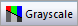

- außerdem...
Verwandte Themen:
Bedienelemente der Registerkarte Symbol im Dialog Details Zeichnung
NACH PUNKTEN
- außerdem...

Verwandte Themen:
NACH ZEICHNUNGEN

- außerdem...
Verwandte Themen:
Diagrammfarben werden über Origins Farbauswahl benutzerdefiniert angepasst und angewendet.
Zusätzlich zu diesem Thema haben Sie die Möglichkeit, Seiten mit Informationen über das benutzerdefinierte Anpassen von Diagrammfarben zu lesen.
Die Farbauswahl wird vom Dialog Details Zeichnung oder über die Schaltflächen der Symbolleiste Stil aus geöffnet.
| Beispieldiagramm | Schaltfläche im Dialog Details Zeichnung oder auf Symbolleiste | Ansicht Farbauswahl | |
|---|---|---|---|
| Elemente einer EINZELNEN Farbe zeichnen |
|
Bedienelemente der Registerkarte Symbol im Dialog Details Zeichnung |
|
| Zeichnungen, deren Farben variieren NACH PUNKTEN |
|
|
|
| Zeichnungen, deren Farben variieren NACH ZEICHNUNGEN |
|
|
|
Origin enthält eine nicht anpassbare Standardfarbliste, die hauptsächlich für die Rückwärtskompatibilität und die programmatische Zuweisung von Farben zuständig ist. Diese Farbliste befindet sich in der LabTalk-Referenztabelle "Farbliste".
Anwender der Bedienoberfläche müssen sich um diese Farbliste nicht kümmern, dass die Farbauswahl eine Anzahl von standardmäßigen Farblisten enthält, von denen jede benutzerdefiniert angepasst und als eine Inkrementliste (.oth file) in dem Ordner \Anwenderdateien\Themes\Graph gespeichert werden kann.
|
Wenn Sie einen Artikel veröffentlichen, werden Sie möglicherweise gebeten, Farbbilder einzureichen, aus denen sowohl Farbbilder (z.B. online) als auch Schwarzweißbilder (z.B. Druck) erstellt werden können. Um zu prüfen, dass Ihre Farbliste eine ausreichend große Zeichnungsdifferenzierung aufweist, können Sie sich eine graustufige Vorschau anzeigen lassen. Wählen Sie Datei: Druckvorschau und klicken Sie auf die Schaltfläche Graustufen . |

Die Farbe wird zu der Gruppe der Farbauswahl Benutzerdefiniert hinzugefügt. Definieren Sie weitere Farben nach Bedarf.
Weiteres, das zu beachten wäre...
Sobald Sie eine Gruppe von benutzerdefinierten Farben als eine Inkrementliste gespeichert haben, können Sie diese Liste von einer der drei Registerkarten der Farbauswahl aus laden:
Wenn Sie auf der Registerkarte Nach Zeichnungen der Farbauswahl sind und sie eine neue Inkrementliste auswählen (eine andere als Q02 Basic), dann wird Ihnen eine Liste von Varianten angeboten. Diese Varianten betreffen "Farbton und Schattierung". Sie können auf jede Variante klicken, um die Farbvarianten in dieser auf Ihre Zeichnungen anzuwenden (und zu bearbeiten und zu speichern). Die gleiche Liste von Farbtönen und Schattierungen kann von der Registerkarte Einzeln aus geladen werden, obwohl die Farben auf dieser Registerkarte nur einzeln angewendet werden können.
Ändern Sie beim Inkrementieren von Nach Punkten die Anfangsfarbe, indem Sie den Schieber Inkrement von verschieben. Wenn die Liste zu Ende ist, bevor alle Punkte gezeichnet wurden, werden die Farben, beginnend mit der ersten Farbe der Liste, zugewiesen.
| Hinweis: Sie können Paletten nicht innerhalb der Bedienoberfläche von Details Zeichnung - Farbauswahl erzeugen oder bearbeiten, aber es gibt Möglichkeiten, Paletten zu Origin hinzuzufügen. Weitere Informationen finden Sie unter Neue Farbpaletten zu Origin hinzufügen. |
Jede Farbliste (Standard oder benutzerdefiniert) kann über eine Registerkarte der Farbauswahl geladen und mit dem Inkrementeditor bearbeitet werden:
| Hinweis: Sie können jede der vorhandenen Farblisten benutzerdefiniert anpassen und als eine Inkrementliste speichern. Diese .oth-Dateien werden im Ordner \Anwenderdateien\Themes\Graph gespeichert. Um benutzerdefinierte Farblisten aus der Farbauswahl zu entfernen, löschen Sie die .oth-Dateien aus diesem Ordner. |
Erweitern Sie die Farblisten, klicken Sie mit der rechten Maustaste auf eine Liste und löschen Sie sie über das Kontextmenü. Sie können auch den Menübefehl Alle zeigen verwenden, um alle Farblisten wiederherzustellen, einschließlich die benutzerdefinierten und die Standardlisten.
Wenn Sie auf der Registerkarte Nach Punkten der Farbauswahl sind, haben Sie fünf Optionen zum Anwenden von Farbe auf die Datenpunkte in einer Zeichnung. Bei der einfachsten Methode, dem Inkrementieren, wird eine Anfangsfarbe festgelegt und dann eine Liste von Farben durchlaufen. Siehe die Erläuterung für "Nach Punkten" unter Eine gespeicherte Inkrementliste verwenden.
Die drei anderen Optionen, Index, RGB Direkt und Farbpalette ermöglichen Ihnen die Verwendung eines Datensatzes der numerischen Werte, um Farbe auf die Zeichnung anzuwenden:
Die letzte Option Y-Wert: Plus-Minus-Summe ist nur für Brückendiagramm verfügbar (wird auch als Wasserfalldiagramm nach McKinsey bezeichnet). Diese Option füllt Säulen/Balken mit verschiedenen Farben, je nachdem ob der Datenpunkt des entsprechenden Y-Werts positiv, negativ oder die Summe ist. Die Summe kann in der Option Datenindizes für Summe/Teilsumme auf der Registerkarte Brückendiagramm festgelegt werden. Sie können die Füllfarbsequenz in der Farbliste unten sehen. Beachten Sie, dass nur die ersten 3 Farben für die Option Y-Wert: Plus-Minus-Summe verwendet werden: Die 1. Farbe in der Liste wird einem positiven Y, die 2. Farbe einem negativen Y und die 3. der Summe zugewiesen. Sie können die Farbabfolge durch eine der folgenden Methoden modifizieren:
Eine Übersicht finden Sie unter Datensatz zum Einstellen der Diagrammfarbe verwenden.
Abgesehen von der Verwendung von Spaltenindizes zum Anwenden einer Farbliste auf gruppierte Zeichnungen, können Sie für Wasserfalldiagramme und farbkodierte Linienschardiagramme die tatsächlichen Werte eines Spaltenidentifizierer verwenden (eine Spaltenbeschriftungszeile), um die Farben der gruppierten Zeichnungen zu variieren.
Um Spaltenbeschriftungswerte für farbkodierte Gruppendiagrammme zu verwenden,
Z-Werte können ausgewählt werden als
Um Einzelheiten zu diesen drei Methoden zu erfahren, lesen Sie bitte die Seite Datensatz zum Steuern der Diagrammfarbe verwenden.
Einige Farbschaltflächen zeigen standardmäßig Auto an.

Wenn Auto auf den Schaltflächen angezeigt wird, wird die Farbe auf diese Weise angewendet:
| Wenn Farbe = Auto, folgt dieses Element... | ...dieser Einstellung: |
|---|---|
|
(Füll-) Musterfarbe |
(Rahmen) Farbe |
|
(Ankerlinien)Farbe |
Symbolfarbe |
|
Symbolfarbe |
(Linien) Farbe Enthält das Diagramm keine Registerkarte Linie, wird Schwarz angezeigt. |
|
(Symbol) Randfarbe |
(Linien) Farbe Enthält das Diagramm keine Registerkarte Linie, wird Schwarz angezeigt. |
|
(Symbol) Füllfarbe |
Die Standardauswahl der Liste Symbolfüllfarbe auf der Registerkarte Diagramm des Dialogs Optionen |
|
(Fehlerbalken) Farbe |
Symbolfarbe Falls kein Symbol vorhanden, (Linien) Farbe. |
Einige von Origins Schaltflächen und Auswahllisten für Farben enthalten auch die Option Keine. Wenn Sie Keine auswählen, wird das Diagrammelement transparent angezeigt.